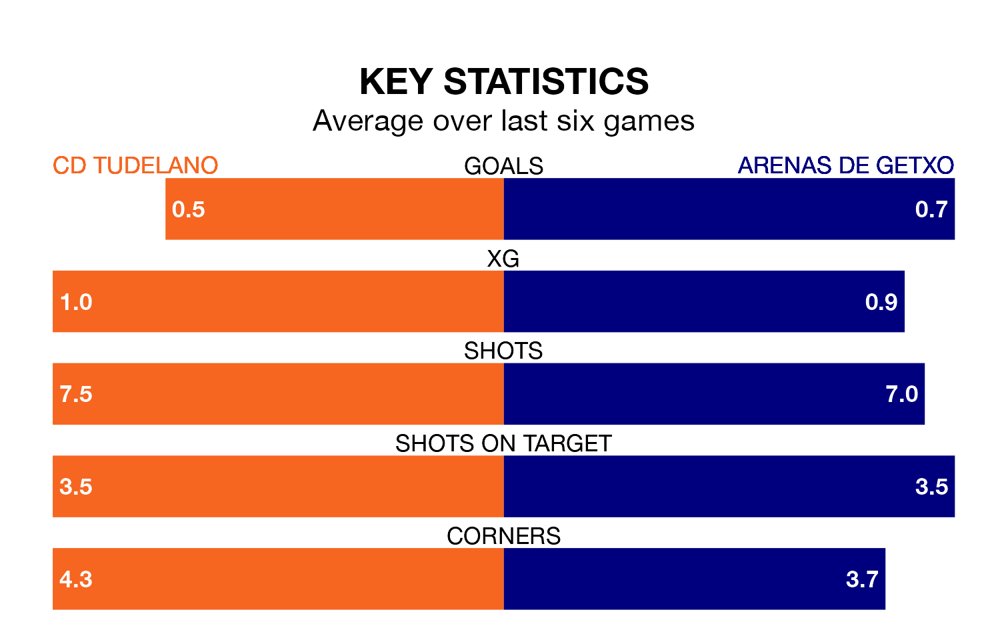

CD Tudelano and Arenas de Getxo both come into Sunday's kick-off at the Estadio Municipal Ciudad de Tudela in poor form, having picked up two and three points respectively in their last six games.
Tudelano have drawn two and lost four of the last six, while Arenas de Getxo have taken three draws and three losses.
With 14 goals in 20 games so far this season, Arenas de Getxo are scoring at below the league average rate with 0.7 goals per game. And they are conceding more than average, letting in 25 goals at a rate of 1.2 per game.
Tudelano, meanwhile, are above average scorers, with 1.3 goals per game, compared to a league average of 1.1. They have conceded 1.0 goal per game.
In the last 10 years, Tudelano and Arenas de Getxo have played each other on nine occasions. Tudelano won four of them, Arenas de Getxo two, and they drew three times.
On average, Tudelano scored 1.1 goals and Arenas de Getxo 0.7 in those matches.
Their last meeting was on September 23, when Tudelano won 2-1 away.
The away team are 14th in the table after 20 games, of which they have won three and drawn eight, earning 17 points.
The hosts are five places ahead of Arenas de Getxo in ninth, with seven wins and seven draws putting them on 28 points.
Tudelano's last match was on January 27, a 1-1 draw against AD San Juan.
Arenas de Getxo lost 1-0 against CD Calahorra last time out, also on January 27.
Updated: 09:21 (UTC), 30/01/24